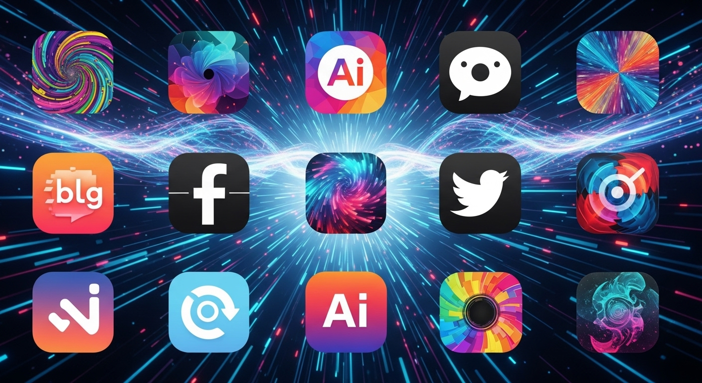
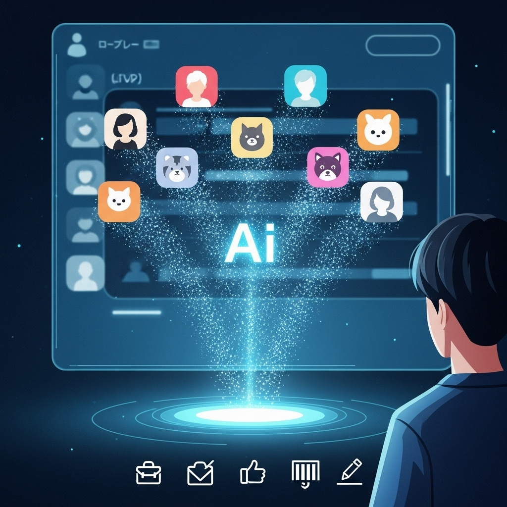
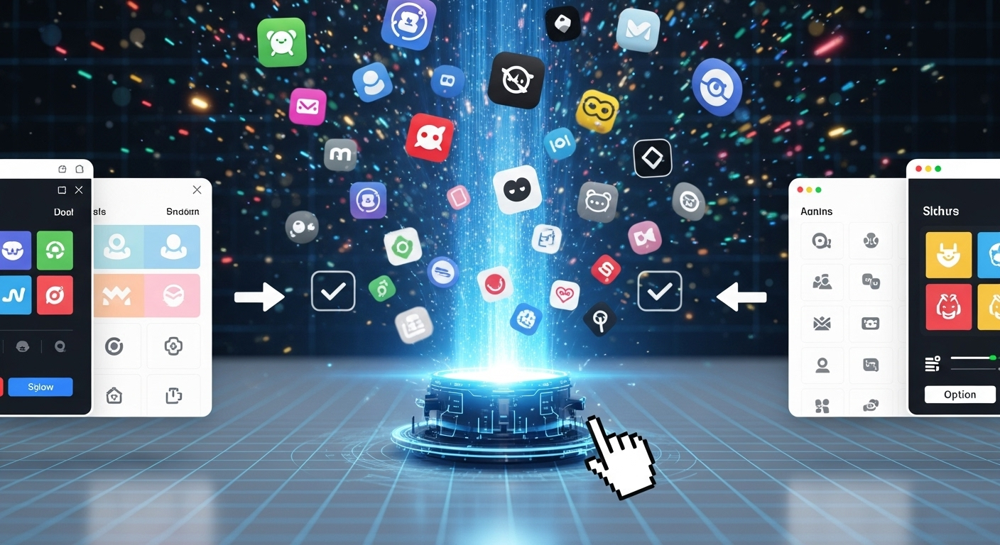
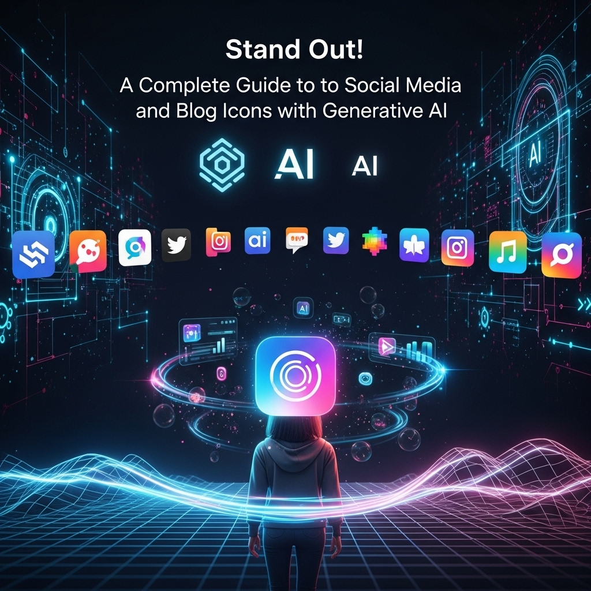
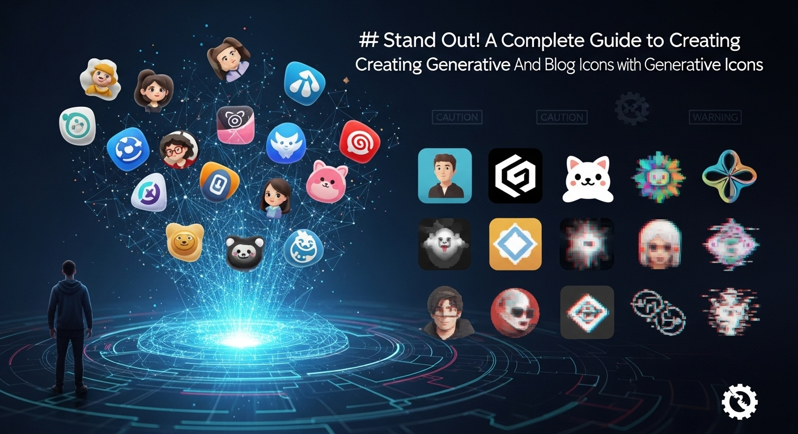
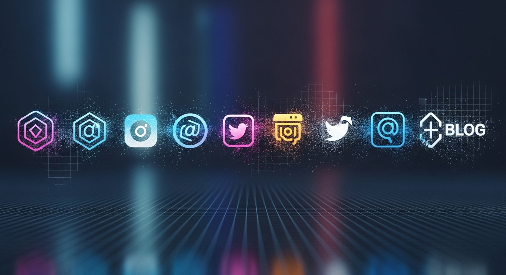
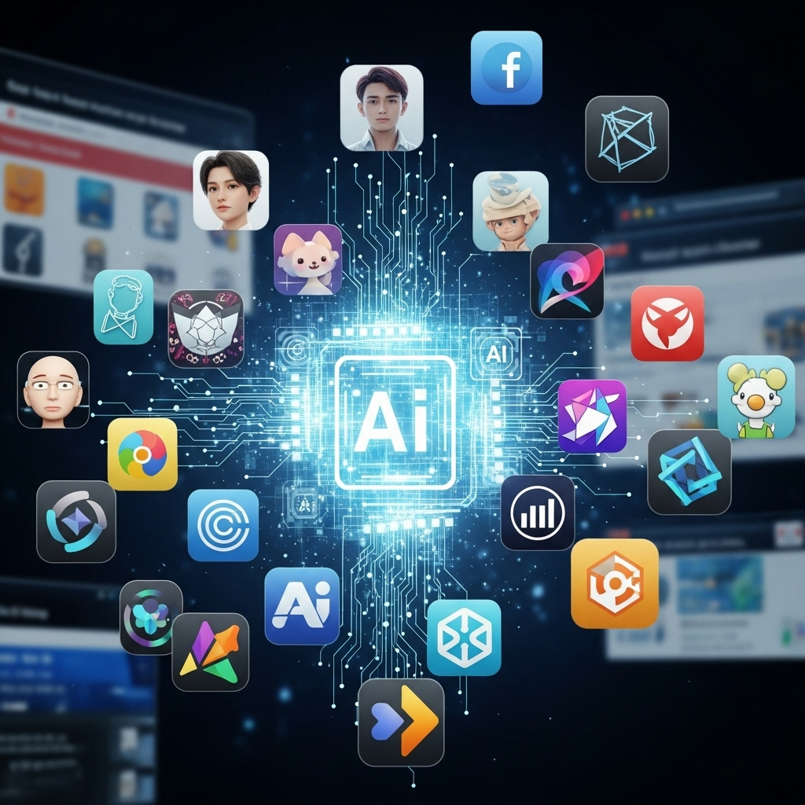
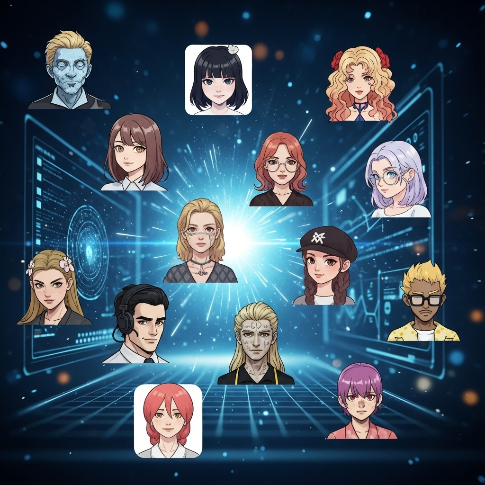

個性際立つ！生成AIでSNS・ブログアイコンを作成する完全ガイド

導入
デジタル化が加速する現代において、SNSやブログは私たちの日常に深く根ざし、自己表現や情報発信の重要な場となっています。その中でも、ひときわ目を引くのが「アイコン」の存在です。アイコンは、あなたのオンライン上の「顔」であり、第一印象を決定づける大切な要素。たった一枚の画像が、あなたの個性や伝えたいメッセージを瞬時に表現し、多くの人々の心に響くこともあれば、素通りされてしまうこともあります。
しかし、「自分らしいアイコンを作りたいけれど、デザインスキルがない」「時間や費用をかけずに、もっと手軽にオリジナリティあふれるアイコンが欲しい」と感じている方も少なくないのではないでしょうか。そんなあなたの悩みを解決する、画期的なテクノロジーが「生成AI」です。
生成AIは、テキストや画像などのデータを学習し、新しいコンテンツを創り出す人工知能の一種です。この技術の進化は目覚ましく、今やプロのデザイナーでなくても、わずかな指示（プロンプト）を与えるだけで、驚くほどハイクオリティな画像を生成できるようになりました。
本記事では、この生成AIを活用して、あなたのSNSやブログを彩る魅力的なアイコンを作成するための完全ガイドをお届けします。生成AIアイコンの基本的な仕組みから、ツールの選び方、具体的な作成手順、そして活用術に至るまで、初心者の方でも安心して取り組めるよう、優しく丁寧に解説していきます。
あなただけの特別なアイコンを手に入れ、オンラインでの存在感を際立たせ、より多くの人々との繋がりを深めていきましょう。さあ、創造性豊かなAIアイコンの世界へ、一緒に足を踏み入れてみませんか？
生成AIでアイコン作成とは？その魅力と活用シーン

デジタル世界におけるあなたの「顔」となるアイコンは、時に千の言葉よりも雄弁に、あなたの個性を語りかけます。そして今、そのアイコン作成に革命をもたらしているのが「生成AI」です。ここでは、生成AIがどのようにアイコン作成を変え、どのような魅力と活用シーンがあるのかを深掘りしていきましょう。
AIアイコンが選ばれる理由【オリジナリティと手軽さ】
なぜ今、多くの人々がAIアイコンに注目し、選んでいるのでしょうか。その理由は、大きく分けて「オリジナリティ」と「手軽さ」という二つの魅力に集約されます。
まず、オリジナリティについてです。従来のアイコン作成では、既存の素材を組み合わせたり、デザイナーに依頼したりするのが一般的でした。既存素材を使う場合、どうしても他の人と似たようなデザインになってしまうリスクがありましたし、デザイナーに依頼するとなると、費用や時間、そしてイメージを伝えるコミュニケーションコストが発生します。
しかし、生成AIは違います。あなたが入力する「プロンプト」と呼ばれる指示文に基づいて、AIがゼロから画像を「生成」します。つまり、世界に一つだけの、あなたのためだけに生み出されたアイコンが手に入るのです。例えば、「桜の花びらが舞う中で微笑む狐のキャラクター、水彩画風、日本の伝統的な色合いで」といった具体的な指示から、AIはあなたの想像力を形にしてくれます。同じプロンプトを使っても、生成される画像には微妙な違いが生まれることもあり、その偶然性もまた、唯一無二のオリジナリティへと繋がります。
次に、手軽さについて見ていきましょう。デザインスキルが全くない方でも、プロンプトを入力するだけでプロ級のアイコンを作成できるのが、生成AIの最大の魅力の一つです。高価なデザインソフトを使いこなす必要も、複雑な描画技術を習得する必要もありません。スマートフォンやPCから、直感的な操作で、誰でも簡単に高品質な画像を生成できるのです。
さらに、時間的な手軽さも特筆すべき点です。デザイナーに依頼すれば数日〜数週間かかるような作業も、AIであれば数秒から数分で複数の候補を生成してくれます。気に入ったものができるまで何度でも試行錯誤できるため、納得のいくアイコンを短時間で手に入れることが可能です。費用面でも、無料または比較的安価なツールが多数存在するため、コストを抑えながらも、高いクオリティのアイコンを実現できます。
このように、生成AIアイコンは、誰もが気軽に、そして唯一無二の表現力を手に入れるための強力なツールとして、急速に普及しているのです。
SNS・ブログでAIアイコンを活用するメリット【差別化とブランディング】
SNSやブログにおいて、アイコンは単なるプロフィール画像以上の意味を持ちます。それは、あなたの「デジタル名刺」であり、フォロワーや訪問者との最初の接点となる重要な要素です。AIアイコンを効果的に活用することで、どのようなメリットが得られるのでしょうか。
一番のメリットは、やはり差別化です。膨大な情報が飛び交うSNSやブログの世界で、あなたのコンテンツが埋もれてしまわないためには、まず視覚的なインパクトで目を引くことが重要です。AIが生成するユニークでハイクオリティなアイコンは、既存のフリー素材や一般的な写真とは一線を画し、見る人の記憶に強く残ります。
例えば、多くの人が顔写真や風景写真を使っている中で、あなたのアイコンが「サイバーパンク風の猫耳少女が、未来都市の夜景を背景に佇むイラスト」だったらどうでしょうか？きっと、多くの人の指を止め、プロフィールページへのクリックを促すことでしょう。このように、AIアイコンはあなたのSNSアカウントやブログに「個性」という名の強力な磁石を埋め込むことができるのです。
次に、ブランディングへの貢献です。アイコンは、あなたの発信する情報や世界観を象徴するものです。一貫性のあるデザインやテイストのアイコンを使用することで、フォロワーはあなたのアカウントやブログを認識しやすくなり、信頼感や親近感を抱きやすくなります。
AIアイコンは、多様なスタイルやテイストを生成できるため、あなたのパーソナルブランドやビジネスのコンセプトに完全に合致するアイコンを作り出すことが可能です。例えば、あなたが料理ブログを運営しているなら、「温かみのある手書き風の野菜のイラスト」や「美味しそうな食材が並んだ水彩画風の静物画」など、ブログの雰囲気に合わせたアイコンを設定できます。これにより、あなたのコンテンツが一貫したブランドイメージを持つことができ、読者に安心感を与え、エンゲージメントの向上にも繋がります。
さらに、AIアイコンは話題性も生み出します。「このアイコン、どうやって作ったの？」「すごく個性的で素敵！」といったコメントが寄せられ、それが新たなコミュニケーションのきっかけとなることも少なくありません。アイコン自体があなたのコンテンツの一部となり、フォロワーとの交流を深めるツールにもなり得るのです。
このように、生成AIで作成したアイコンは、単なる画像を超え、あなたのオンライン活動を次のレベルへと引き上げるための強力な武器となります。差別化を図り、強固なブランディングを築き、あなたのメッセージをより多くの人々に届けるために、AIアイコンの活用をぜひ検討してみてください。
生成AI画像アイコン作成ツールの選び方

生成AIを活用したアイコン作成は、非常に魅力的ですが、市場には多種多様なツールが存在し、どれを選べば良いのか迷ってしまうかもしれません。あなたの目的やスキルレベルに最適なツールを見つけるために、ここではツールの選び方を具体的に解説していきます。
選び方１．機能性・操作性・コストを重視する
生成AIツールを選ぶ際、まず考慮すべきは「機能性」「操作性」「コスト」の3点です。これらは、あなたのアイコン作成体験に直接影響を与える重要な要素となります。
機能性
ツールの機能性は、あなたがどのようなアイコンを作成したいかによって、重視すべき点が異なります。
- 生成スタイルと多様性: アニメ風、リアル、水彩画、油絵、ピクセルアート、3D、ミニマルなど、ツールが対応しているスタイルは多岐にわたります。あなたのイメージするアイコンのテイストが、そのツールで表現できるかを確認しましょう。特定のスタイルに特化したツールもあれば、幅広いスタイルに対応しているツールもあります。
- 画像生成の精度と品質: 生成される画像の解像度、細部の描写、色の鮮やかさなど、最終的なアウトプットの品質はツールによって差があります。無料版では低解像度、有料版では高解像度といった違いがあることも多いです。
- 編集・調整機能: 生成された画像をそのまま使うだけでなく、トリミング、色調補正、背景除去、テキスト追加などの簡単な編集機能が備わっていると、さらに理想のアイコンに近づけやすくなります。
- プロンプト入力の柔軟性: 複雑な指示に対応できるか、ネガティブプロンプト（生成してほしくない要素を指定する機能）が使えるかなども、よりイメージに近い画像を生成するために重要です。
- 日本語対応: 日本語でのプロンプト入力やインターフェースの日本語対応は、英語が苦手な方にとっては大きなメリットとなります。
操作性
どれだけ高機能なツールでも、使いこなせなければ意味がありません。直感的で分かりやすい操作性であるかを確認しましょう。
- ユーザーインターフェース（UI）: ボタンの配置、メニューの構成、情報の見やすさなど、全体的なデザインがシンプルで分かりやすいか。
- ユーザーエクスペリエンス（UX）: プロンプト入力から画像生成、ダウンロードまでの一連の流れがスムーズで、ストレスなく作業できるか。
- 学習コスト: 初めてAIツールを使う方でも、チュートリアルやヘルプが充実しているか、コミュニティで情報交換ができるかなども考慮に入れると良いでしょう。無料の体験版や試用期間があるツールで実際に触ってみるのが一番です。
コスト
予算はツール選びにおいて避けて通れない要素です。
- 無料プラン: 多くのツールには無料プランが用意されていますが、生成回数に制限があったり、生成速度が遅かったり、機能が限定的だったりすることがほとんどです。まずは無料プランで試してみて、使い勝手や生成品質を確認するのがおすすめです。
- 有料プラン: より多くの生成回数、高速生成、高解像度、商用利用の許可、追加機能（例：シード値固定、インペイント/アウトペイント）などが有料プランで提供されます。月額課金制や従量課金制など、料金体系も様々なので、あなたの利用頻度や目的に合わせて最適なプランを選びましょう。
- クレジット制度: 一部のツールでは、画像を生成するたびに「クレジット」を消費する方式を採用しています。クレジットの購入費用と、あなたが生成したい画像の量を比較して、コストパフォーマンスを検討しましょう。
これらの要素を総合的に考慮し、あなたのニーズに最も合ったツールを選ぶことが、満足のいくアイコン作成への第一歩となります。
選び方２．著作権・商用利用の確認方法を理解する
生成AIで作成した画像を利用する上で、非常に重要なのが「著作権」と「商用利用」に関する理解です。これらのルールはツールによって大きく異なるため、利用規約をしっかりと確認することが不可欠です。
著作権について
生成AIが作り出す画像の著作権は、法的にまだ明確な統一見解が出ていない部分もありますが、一般的には、以下の3つのパターンに分かれます。
- 生成したユーザーに帰属する: 最も理想的なケースです。生成された画像は、あなたが自由に利用・改変・配布できることになります。
- AIツールの提供元に帰属する: 生成された画像の著作権は、ツールを提供している企業が保有します。この場合、利用規約で許可されている範囲内でのみ利用が可能です。
- 著作権が発生しない、または曖昧: AIが自動生成したものであるため、人間の創作物とは異なり著作権が発生しない、あるいはその帰属が不明確なケースです。
商用利用の確認方法
SNSやブログのアイコンとして使う場合、個人利用の範囲であれば問題になることは少ないですが、もしそのSNSやブログが収益化されている場合や、生成したアイコンを使って商品を販売したり、ビジネス用途で利用したりする場合は、「商用利用」に該当する可能性があります。
商用利用が可能かどうかは、各AIツールの「利用規約（Terms of Service）」や「ライセンス（License）」の項目に明記されています。確認すべきポイントは以下の通りです。
- 商用利用の可否: 明示的に「商用利用可」と記載されているか、または「商用利用は禁止」とされているか。
- クレジット表記の必要性: 商用利用する場合、AIツール名や開発元を明記する必要があるか。
- 生成物の改変の可否: 生成した画像を加工したり、他の素材と組み合わせたりすることが許可されているか。
- 有料プランの必要性: 無料プランでは商用利用が制限され、有料プランにアップグレードすることで商用利用が可能になるケースが非常に多いです。
- 禁止事項: 誹謗中傷、差別、暴力的な表現など、特定の用途での利用が禁止されていないか。
確認の重要性
これらの規約を確認せずに商用利用を進めてしまうと、著作権侵害や契約違反となり、予期せぬトラブルに巻き込まれる可能性があります。最悪の場合、損害賠償を請求されることも考えられます。
具体的な確認手順:
- AIツールの公式サイトにアクセスする。
- フッター（ページ下部）やメニューバーにある「利用規約（Terms of Service）」「プライバシーポリシー（Privacy Policy）」「ライセンス（License）」「FAQ」などのリンクを探す。
- これらのドキュメントを読み、特に「著作権（Copyright）」「商用利用（Commercial Use）」「知的所有権（Intellectual Property）」といったキーワードで検索し、関連する記述を慎重に確認する。
- 不明な点があれば、ツールのサポートに問い合わせる。
利用規約は専門的な言葉で書かれていることも多いため、理解しにくい場合は、オンラインの翻訳ツールを活用したり、法律の専門家に相談したりすることも検討しましょう。安全で安心してAIアイコンを活用するためにも、この確認作業は決して怠らないでください。
選び方３．人気の生成AIアイコン作成ツールを比較検討する
数ある生成AIツールの中から、あなたのニーズに最適なものを選ぶためには、人気のツールとその特徴を比較検討することが有効です。ここでは、代表的なAI画像生成ツールをいくつかご紹介し、それぞれの特徴や得意なこと、料金体系などを比較します。
1. Midjourney（ミッドジャーニー）
- 特徴: 圧倒的な画質の高さと芸術性で知られています。特にイラストレーション、ファンタジー、アート性の高い画像生成に優れています。独特の美しい絵柄が特徴で、プロのクリエイターからも高い評価を受けています。Discord上で操作するのが基本です。
- 得意なスタイル: 幻想的な風景、キャラクターイラスト、写真風、抽象画など、幅広いアートスタイルに対応しますが、特に美的センスが光る画像が得意です。
- 操作性: Discordのコマンド入力が基本となるため、初心者にはやや敷居が高いと感じるかもしれませんが、慣れると非常にパワフルです。
- コスト: 無料体験は終了し、現在は有料プランのみ提供されています（月額10ドル〜）。商用利用は有料プランで可能。
- 注意点: 日本語プロンプトも可能ですが、英語の方が精度が高い傾向があります。生成速度は速いですが、クレジット消費によって制限される場合があります。
2. Stable Diffusion（ステーブルディフュージョン）
- 特徴: オープンソースであるため、無料で利用できる点が最大の魅力です。ローカル環境にインストールして利用できるため、プライバシー面での安心感も高く、カスタマイズ性が非常に高いです。様々なモデル（学習済みデータセット）を導入することで、生成できる画像の幅が大きく広がります。
- 得意なスタイル: キャラクター、風景、写真、イラストなど、あらゆるスタイルに対応できます。特定のモデルを導入することで、アニメ調や特定のアートスタイルに特化することも可能です。
- 操作性: ローカル環境での利用にはPCのスペックとある程度の知識が必要ですが、Web版（Stability AIのDreamStudioなど）や各種サービス（Hugging Faceなど）でも利用可能です。
- コスト: 基本的に無料（オープンソース）。Web版サービスは有料クレジット制の場合もあります。商用利用はライセンスに準じますが、多くの場合、寛容なライセンスが適用されています。
- 注意点: ローカル環境での導入・設定は初心者にはやや難しいかもしれません。Web版は手軽ですが、機能が限定される場合があります。
3. DALL-E 3（ダリ・スリー）
- 特徴: OpenAIが開発した画像生成AIで、特にプロンプトの解釈能力が非常に高いことで知られています。複雑な指示や複数の要素を組み合わせた指示でも、意図を正確に汲み取って画像を生成する能力に優れています。ChatGPT Plusユーザーは直接ChatGPT内で利用できます。
- 得意なスタイル: リアルな写真、イラスト、ロゴ、デザイン要素など、様々なスタイルに対応します。特にテキストを画像内に正確に描画する能力が高いです。
- 操作性: ChatGPTのチャットインターフェースを通じて自然言語で指示できるため、非常に直感的で初心者にも優しいです。
- コスト: ChatGPT Plus（月額20ドル〜）の機能として利用可能。商用利用はOpenAIの利用規約に準じます。
- 注意点: 無料版はありません。生成される画像の解像度やアート性ではMidjourneyに一歩譲る場合もありますが、プロンプト解釈の正確性は群を抜いています。
4. CanvaのAI画像生成機能
- 特徴: デザインツールとして人気のCanvaに搭載されているAI画像生成機能です。Canvaの他のデザイン機能とシームレスに連携できるため、生成した画像をそのままデザインに組み込んだり、編集したりするのに非常に便利です。
- 得意なスタイル: イラスト、写真、3D、水彩画など、幅広いスタイルに対応。Canvaのテンプレートと組み合わせることで、手軽にプロフェッショナルなデザインを作成できます。
- 操作性: Canvaの直感的なUIに統合されているため、デザイン初心者でも簡単に利用できます。
- コスト: 無料プランでも一部機能が利用可能。Canva Pro（月額1500円程度〜）に加入することで、より多くの機能や生成回数を利用できます。商用利用はCanvaのライセンスに準じます。
- 注意点: 他の専用ツールに比べると、生成される画像の独自性やアート性で劣る場合があります。あくまでデザインツールの一部としての機能です。
5. Adobe Firefly（アドビ ファイヤーフライ）
- 特徴: Adobeが提供する生成AIで、PhotoshopやIllustratorといったAdobe製品との連携が強みです。特に、商用利用に配慮した「商用利用可能な安心なデータ」を生成することを目指しており、著作権侵害のリスクを低減する努力がなされています。
- 得意なスタイル: リアルな画像生成、テキスト効果、ベクターグラフィック生成など、Adobe製品との連携を前提としたクリエイティブな用途に強みを発揮します。
- 操作性: Webブラウザから利用でき、Adobe製品ユーザーには馴染みやすいインターフェースです。
- コスト: 無料版もありますが、機能制限があります。Adobe Creative Cloudのサブスクリプションに含まれる形で提供されることが多いです。商用利用については、Adobeの利用規約を確認する必要があります。
- 注意点: 生成される画像の品質は高いですが、他の専門ツールに比べて生成速度がやや遅い場合があります。
これらのツールを比較検討する際は、「あなたがどのようなアイコンを作りたいか」「どの程度の予算をかけられるか」「どの程度の操作スキルを持っているか」を明確にすることが重要です。まずは無料プランや体験版を試してみて、それぞれのツールの「肌触り」を体験することをおすすめします。そうすることで、あなたにとって最適なAIアイコン作成ツールが見つかるはずです。
生成AIでアイコンを作るメリット

生成AIを使ってアイコンを作成することには、従来の作成方法にはない、多くの魅力的なメリットがあります。ここでは、その主要なメリットを深掘りし、あなたのオンライン活動にどのような好影響をもたらすのかを具体的に見ていきましょう。
メリット１．デザインスキル不要でハイクオリティなアイコンが作れる
「デザインは苦手だから、アイコン作りは諦めている」「プロのデザイナーに頼む費用も時間もない」——そう感じている方は少なくないでしょう。しかし、生成AIは、まさにそうした悩みを抱える方々のためにあると言っても過言ではありません。
最大のメリットの一つは、デザインスキルが一切不要である点です。従来、魅力的なアイコンを作成するには、Adobe PhotoshopやIllustratorといった専門的なデザインソフトの操作スキル、色彩理論、構図の知識、そして何よりも「絵心」が求められました。これらを習得するには、多大な時間と努力、そして費用がかかります。
しかし、生成AIは、あなたが入力する「プロンプト（指示文）」に基づいて画像を生成します。つまり、あなたの頭の中にあるイメージを言葉で表現するだけで、AIがその言葉を解釈し、視覚的な形へと変換してくれるのです。例えば、「宇宙を旅する猫のキャラクター、アニメ風、パステルカラーで、笑顔」といった具体的な指示を出すだけで、AIは瞬時に複数の候補を生成してくれます。
しかも、そのクオリティは驚くほど高いです。まるでプロのイラストレーターが描いたかのような精緻なイラストや、プロの写真家が撮影したかのようなリアルな画像が、数秒から数分で手に入ります。AIは膨大な数の画像を学習しているため、様々なスタイルやテクニックを模倣し、あなたの指示に合わせた最適な表現を見つけ出してくれます。
これにより、デザイン経験が全くない方でも、「ハイクオリティなアイコン」を手に入れることが可能になります。あなたは描画ツールを使いこなす必要も、色彩のバランスに頭を悩ませる必要もありません。必要なのは、あなたの創造力と、それを言葉にする力だけです。この手軽さでプロ級の仕上がりを実現できることは、多くの人々にとって、オンラインでの自己表現のハードルを大きく下げる画期的なメリットと言えるでしょう。
メリット２．多様なスタイル・テイストを短時間で試せる
アイコンを作成する際、「どんなスタイルが自分に合うだろう？」「このテイストで試してみたいけど、もし合わなかったらどうしよう？」といった迷いはつきものです。生成AIは、このような試行錯誤のプロセスを劇的に効率化し、あなたの選択肢を無限に広げてくれます。
このメリットの核心は、「多様なスタイル・テイストを短時間で試せる」という点にあります。
もしあなたが手描きや従来のデジタルツールでアイコンを作成する場合、一つのスタイルやテイストを試すだけでも、かなりの時間と労力がかかります。例えば、「アニメ風」で描いた後、「やっぱりリアルな写真風にしたい」と思ったら、また最初から描き直すか、全く別の手法で作り直す必要がありました。これは、時間と費用、そしてモチベーションの大きな消耗に繋がります。
しかし、生成AIを使えば、このプロセスは驚くほどシンプルになります。プロンプトに「アニメ風」と入力して生成し、気に入らなければプロンプトを「リアルな写真風」に変更して再度生成するだけです。水彩画風、ピクセルアート、サイバーパンク、レトロポップ、ミニマリスト、抽象画など、思いつく限りのあらゆるスタイルやテイストを、わずか数秒〜数分で試すことができます。
例えば、以下のようなプロンプトを試すことができます。
- 「笑顔の女性の顔、アニメ風、明るい色彩」
- 「笑顔の女性の顔、写実的な写真風、自然光」
- 「笑顔の女性の顔、水彩画風、柔らかいタッチ」
- 「笑顔の女性の顔、ピクセルアート、8bitゲーム風」
- 「笑顔の女性の顔、サイバーパンク、ネオンカラー」
このように、プロンプトの記述を少し変えるだけで、全く異なる雰囲気のアイコンが次々と生成されます。複数の候補の中から「これだ！」という一枚を見つけるまで、何度でも気軽に試行錯誤できるのです。
この「短時間で多様なスタイル・テイストを試せる」というメリットは、特に以下のような場面で威力を発揮します。
- ブランディングの方向性を模索している時: どのようなビジュアルが自分のブランドイメージに最も合致するか、様々なパターンを比較検討できます。
- トレンドを取り入れたい時: 最新のアートスタイルや流行のテイストを、手軽に自分のアイコンに取り入れることができます。
- 複数のプラットフォームで使い分けたい時: Instagramではリアルな写真風、X（旧Twitter）ではアニメ風、といったように、プラットフォームの特性に合わせて異なるテイストのアイコンを迅速に作成できます。
生成AIは、あなたの創造性を制限することなく、むしろその可能性を大きく広げてくれるツールです。短時間で多種多様なビジュアルを試せることで、あなたの理想とするアイコンを効率的に見つけ出し、オンラインでの表現をより豊かに彩ることができるでしょう。
メリット３．他のインフルエンサーと差別化できるオリジナリティ
SNSやブログの世界は、今や「インフルエンサー」と呼ばれる人々が数多く活躍する、競争の激しい場となっています。その中で、あなたの存在を際立たせ、多くの人々の心に深く刻み込むためには、「オリジナリティ」が不可欠です。生成AIは、このオリジナリティを最大限に引き出し、他のインフルエンサーとの決定的な差別化を図る強力な武器となります。
これまで、多くのインフルエンサーは、自身の顔写真、あるいはフリー素材のイラストや写真、あるいは有料でデザイナーに依頼したイラストをアイコンとして使用してきました。しかし、顔写真ではプライバシーの問題や、そもそも顔出しをしたくないというニーズもあります。フリー素材は手軽ですが、他の多くの人が使っているため、どうしても「どこかで見たことがある」という印象を与えがちです。また、デザイナーに依頼するにしても、費用と時間がかかる上、最終的なイメージが完全に伝わらないリスクも存在します。
ここで生成AIの出番です。生成AIは、あなたの言葉による指示（プロンプト）に基づいて、世界に一つだけのユニークな画像を創造します。この「唯一無二」である点が、他のインフルエンサーとの差別化において最も重要なポイントです。
例えば、あなたがペットの猫をテーマにしたブログを運営しているとしましょう。多くの人が自分の猫の写真をアイコンにする中で、あなたは以下のようなプロンプトでアイコンを生成することができます。
- 「宇宙飛行士のヘルメットをかぶったシャム猫が、星々が輝く宇宙空間を漂っているイラスト、サイバーパンク風、鮮やかなネオンカラー」
- 「日本の伝統的な着物を着た三毛猫が、桜の木の下で抹茶を飲んでいる水彩画、和風モダン」
- 「古い図書館で本を読んでいる賢そうな黒猫、油絵風、アンティークな雰囲気」
どうでしょうか？これらは、あなたの猫という共通のテーマを持ちながらも、AIが生成することで、誰もが思いつかないような、非常に個性的で目を引くビジュアルとして表現されます。このようなアイコンは、一目見ただけで「このアカウントは何か面白いことをしているぞ」「他の人とは違う世界観を持っているな」という強い印象を与え、フォロワーの記憶に深く刻まれるでしょう。
さらに、AIは非常に細かなニュアンスまで表現する能力を持っています。例えば、単に「笑顔」と指示するだけでなく、「優しく微笑む」「いたずらっぽい笑顔」「知的な笑み」といった具体的な感情や表情をプロンプトに含めることで、あなたのパーソナリティをより細やかに反映したアイコンを作成できます。
このオリジナリティは、単に「目立つ」だけでなく、あなたのパーソナルブランディングを強化する上でも非常に重要です。ユニークなアイコンは、あなたの発信するコンテンツと一貫した世界観を構築し、フォロワーに「あなたらしさ」を強く印象付けます。結果として、あなたのコンテンツへのエンゲージメントが高まり、フォロワーの獲得やコミュニティの形成にも大きく貢献するでしょう。
生成AIは、あなたの創造力を形にし、デジタル世界におけるあなたの「顔」を、誰にも真似できない特別なものに変える力を持っています。このメリットを最大限に活用し、あなたの個性を輝かせ、他のインフルエンサーとは一線を画す存在感を確立していきましょう。
生成AI画像アイコン作成におけるデメリットと注意点

生成AIによるアイコン作成は多くのメリットをもたらしますが、その一方でいくつかのデメリットや注意すべき点も存在します。これらを事前に理解しておくことで、トラブルを避け、よりスムーズで満足のいくアイコン作成が可能になります。
デメリット１．イメージ通りの生成にはプロンプトの工夫が必要
生成AIは、あなたの言葉を解釈して画像を生成する魔法のようなツールですが、それは「あなたがどれだけ明確に、そして効果的に言葉を伝えられるか」にかかっています。これが、生成AIを使う上での最初の、そして最も大きな壁となるかもしれません。
「イメージ通りの画像を生成するには、プロンプトの工夫が必要」であることは、生成AIの最大のデメリットの一つと言えます。
例えば、「可愛い猫のアイコン」と入力したとします。AIは「可愛い猫」という漠然とした指示から、学習データに基づいた一般的な「可愛い猫」の画像を生成するでしょう。しかし、あなたの頭の中にある「可愛い猫」は、もしかしたら「大きな瞳で上目遣いの白猫、水彩画風、背景はピンクの花畑」だったかもしれません。AIはあなたの心を読むことはできないため、この具体的なイメージがプロンプトに含まれていなければ、意図しない画像が生成されてしまうのです。
この「イメージと生成結果のギャップ」を埋めるためには、以下のようなプロンプトの工夫が求められます。
- 具体性: 抽象的な言葉ではなく、具体的な名詞、形容詞、動詞を使う。「猫」ではなく「シャム猫」、「可愛い」ではなく「大きな瞳で、上目遣いの、笑顔の」のように詳細に記述します。
- 詳細な描写: 色、質感、光の当たり方、背景、服装、表情、ポーズなど、あらゆる要素を具体的に指示します。「青い空と白い雲」だけでなく、「夕焼けに染まる空と、シルエットになった雲」のように、情景を詳しく描写します。
- スタイル指定: アニメ風、リアル、水彩画、油絵、ピクセルアート、サイバーパンクなど、希望するアートスタイルを明確に指定します。
- ネガティブプロンプトの活用: 生成してほしくない要素を指示する「ネガティブプロンプト」も非常に重要です。例えば、「手が不自然にならないように」「文字を入れないで」「ホラー要素は避けて」といった指示を与えることで、望まない要素の出現を防ぐことができます。
- 試行錯誤と修正: 一度で完璧な画像が生成されることは稀です。生成された画像を見て、どこがイメージと違うのかを分析し、プロンプトを修正して再生成する、という試行錯誤を繰り返す必要があります。これは、まるでAIと対話しながら共同作業を進めるようなプロセスです。
このプロンプトの工夫は、最初は難しく感じるかもしれませんが、回数を重ねるごとにコツを掴んでいくことができます。他のユーザーが公開しているプロンプトを参考にしたり、プロンプト生成を補助するツールを活用したりするのも良いでしょう。
「プロンプトエンジニアリング」と呼ばれるこのスキルは、生成AIを使いこなす上で非常に重要です。このデメリットを理解し、粘り強くプロンプトを磨き上げることで、あなたはAIをあなたの忠実なクリエイティブパートナーとして最大限に活用できるようになるでしょう。
デメリット２．AI特有の絵柄や細部の不自然さが発生する可能性
生成AIの技術は目覚ましい進化を遂げていますが、それでも完璧ではありません。特に人間の手や顔、複雑な構造物など、細部の描写においては、まだAI特有の不自然さや違和感が生じることがあります。これは、AIアイコンを作成する上で認識しておくべき重要なデメリットです。
「AI特有の絵柄や細部の不自然さが発生する可能性」は、以下のような形で現れることが多いです。
- 手や指の描写: 人間の手や指は非常に複雑な構造をしており、AIが正確に描写するのは難しい部分の一つです。指が多すぎたり少なすぎたり、関節が不自然に曲がっていたり、形状が歪んでいたりすることがよくあります。
- 顔の非対称性や違和感: 完璧な左右対称に見えても、よく見ると目の大きさが微妙に違ったり、口の形が歪んでいたり、表情が不自然だったりすることがあります。特に、複数の顔が写っている場合、一部の顔だけが奇妙な描写になることもあります。
- 物体や背景の破綻: 背景の建物や風景が不自然に歪んでいたり、あり得ない構造になっていたりすることがあります。また、オブジェクト同士の繋がりが曖昧だったり、影の方向がバラバラだったりすることもあります。
- 文字の描画: テキストを画像内に含める指示を出しても、AIが生成する文字はほとんどの場合、意味不明な記号の羅列になったり、文字化けしたりします。正確なテキストを描画するのは、現在のAIには非常に困難なタスクです。
- AI特有の「雰囲気」: どんなにリアルな画像を生成しても、どこか「AIが作った」と感じさせる独特の雰囲気や、細部のパターン、色の傾向などが見られることがあります。これは好みが分かれる点でもあります。
これらの不自然さは、AIが学習した大量の画像データからパターンを抽出して生成しているため、特定のパターンが偏って学習されたり、複雑な構造の理解が不十分だったりすることに起因します。
このデメリットへの対処法:
- プロンプトの改善: 不自然さが出やすい部分を具体的に指示したり、ネガティブプロンプトで「不自然な手」「歪んだ顔」といった要素を排除するよう試みます。
- 複数生成と選択: 一度で完璧なものが生成されることは稀なので、複数の画像を生成し、その中から最も自然でイメージに近いものを選ぶようにします。
- 部分的な再生成（Inpainting/Outpainting）: 一部のツールでは、画像の特定の部分だけをAIに再生成させる機能（Inpainting）があります。不自然な部分だけを修正させることで、全体をやり直す手間を省けます。
- 手動での修正・加工: 生成された画像を、PhotoshopやCanvaなどの画像編集ツールで手動で修正・加工することも有効です。例えば、不自然な指を消したり、顔の歪みを補正したり、背景をぼかしたりすることで、自然さを向上させることができます。
- スタイルやテイストの調整: あえてデフォルメされたイラスト調や抽象的なスタイルを選ぶことで、細部の不自然さが目立ちにくくなることもあります。
AIの進化は日進月歩であり、これらの不自然さは徐々に改善されていくことでしょう。しかし、現状ではこのようなデメリットがあることを理解し、生成された画像を鵜呑みにせず、必要に応じて修正や調整を行う心構えが重要です。完璧を求めすぎず、AIの得意な部分を活かしつつ、あなたの創造力で補完していく姿勢が、満足のいくアイコン作成へと繋がります。
デメリット３．AI生成コンテンツの倫理的な問題への配慮
生成AIの普及は、クリエイティブな可能性を広げる一方で、倫理的な問題や社会的な課題も提起しています。特に、AI生成コンテンツを公開し、活用する際には、これらの問題に十分な配慮をすることが求められます。
「AI生成コンテンツの倫理的な問題への配慮」は、以下の3つの側面から考えることができます。
1. 著作権侵害のリスク（学習データの問題）
AIは、インターネット上にある膨大な画像データを学習することで、新しい画像を生成する能力を獲得しています。しかし、その学習データの中には、著作権で保護された画像も含まれている可能性があります。
- 著作権侵害の可能性: AIが生成した画像が、特定の既存の作品に酷似していた場合、著作権侵害とみなされるリスクがあります。特に、特定のアーティストの画風や特定のキャラクターを模倣するようなプロンプトは注意が必要です。
- アーティストへの影響: AIが簡単に画像を生成できるようになったことで、人間のクリエイターの仕事が奪われるのではないか、という懸念も存在します。
配慮と対策:
- 利用規約の遵守: 各AIツールの利用規約を厳守し、特に商用利用や著作権に関する記述をよく確認します。
- 模倣の回避: 特定の既存作品やアーティストの画風を意図的に模倣するようなプロンプトは避け、あくまでオリジナルな表現を目指しましょう。
- AI生成であることを明示する: 疑義が生じないよう、SNSのプロフィールやブログ記事などで、そのアイコンがAIによって生成されたものであることを明示することも、一つの誠実な対応と言えるでしょう。
2. 誤情報・フェイクコンテンツの拡散
AIは、現実には存在しない人物や風景を、あたかも本物であるかのようにリアルに生成する能力を持っています。これが悪用されると、誤情報やフェイクコンテンツの拡散に繋がり、社会的な混乱を招く可能性があります。
- ディープフェイク: 特に、実在の人物の顔を合成したり、存在しないニュース映像を作り出したりする「ディープフェイク」技術は、プライバシー侵害や名誉毀損、社会の信頼性低下といった深刻な問題を引き起こす可能性があります。
- 表現の偏り: AIが学習したデータに偏りがある場合、特定の性別、人種、文化などに対するステレオタイプな表現や、差別的な表現を生成してしまうリスクも指摘されています。
配慮と対策:
- 責任ある利用: 生成した画像を、他者を傷つける目的や、誤情報を拡散する目的で利用しないという倫理観を持つことが重要です。
- AI生成の明示: 特にリアルな人物画像などをアイコンとして利用する際は、「これはAIが生成した架空の人物です」といった注意書きを添えることで、誤解を防ぐことができます。
- 表現の多様性への配慮: 意図せず特定の偏った表現を生成してしまった場合は、プロンプトを修正したり、別の画像を生成したりするなど、多様性を尊重する姿勢が求められます。
3. プライバシーとセキュリティ
一部のAIツールでは、ユーザーがアップロードした画像をAIが学習データとして利用する場合があります。これにより、意図せず自身の肖像権やプライバシーが侵害されるリスクも考えられます。
配慮と対策:
- 利用規約の確認: プライバシーポリシーをよく読み、アップロードした画像がどのように利用されるのかを確認します。
- 個人情報のアップロードを避ける: 自身の顔写真や、個人が特定できる情報を含む画像を安易にアップロードすることは避けましょう。
生成AIは強力なツールであるからこそ、その利用には責任が伴います。これらの倫理的な問題に配慮し、健全で建設的な方法でAIアイコンを活用していくことが、私たちユーザーに求められる姿勢と言えるでしょう。未来のデジタル社会をより豊かに、より安全なものにするために、一人ひとりが意識を持って行動していくことが大切です。
生成AIでアイコンを作成する具体的な手順とコツ

さあ、いよいよ生成AIを使ってあなただけのアイコンを作成する具体的な手順に入りましょう。ここでは、アイコン作成の最初の一歩から、より魅力的な画像を生成するためのコツまで、ステップバイステップで解説していきます。
流れ１．アイコンのコンセプトとイメージを明確にする
生成AIでアイコンを作成する際、最も重要な最初の一歩は、「アイコンのコンセプトとイメージを明確にする」ことです。どんなに高性能なAIツールを使っても、あなたが何を求めているのかが曖昧だと、理想のアイコンは生まれません。このステップは、いわばAIへの「設計図」を描く作業です。
1. アイコンの目的を考える
まず、なぜこのアイコンが必要なのかを自問自答してみましょう。
- SNSのプロフィール画像として？ （例：X, Instagram, Facebook, TikTokなど）
- ブログの著者アイコンとして？
- 特定のプロジェクトやイベントのロゴとして？
- オンライン会議のアバターとして？
目的が明確になることで、アイコンに求める要素（例：視認性、親しみやすさ、専門性など）が絞り込まれてきます。
2. ターゲット層を意識する
あなたのアイコンを誰に見てもらいたいですか？
- 友人や知人？ → 親しみやすさ、個性を重視
- ビジネス関係者？ → 信頼性、専門性、清潔感を重視
- 趣味の仲間？ → 共通の興味、楽しさを重視
- 不特定多数のフォロワー？ → 視覚的インパクト、分かりやすさを重視
ターゲット層によって、アイコンの雰囲気やデザインの方向性が大きく変わります。
3. 伝えたいメッセージや世界観を言葉にする
あなたのSNSやブログ、活動を通して、何を伝えたいですか？どのような世界観を表現したいですか？
- キーワードを書き出す:
- 例：「明るい」「楽しい」「落ち着いた」「知的な」「クリエイティブ」「神秘的」「キュート」「クール」「パワフル」
- 例：「自然」「未来」「宇宙」「動物」「食べ物」「アート」「テクノロジー」
- 例：「親しみやすい」「真面目な」「ユーモラスな」「優しい」
- 色や雰囲気のイメージを固める:
- 例：「暖色系で温かい雰囲気」「寒色系でクールな印象」「パステルカラーで柔らかい感じ」「モノトーンで洗練された印象」
4. アイコンの「主役」を決める
アイコンの中心となる要素は何でしょうか？
- 人物: 自身の顔、似顔絵、架空のキャラクター
- 動物: ペット、好きな動物、想像上の生き物
- 物体: 趣味に関連する道具、シンボル、ロゴ
- 抽象的なデザイン: 模様、図形、ロゴマーク
主役が決まれば、それをどのように表現したいかを考えます。
5. 参考資料を集める（インスピレーション）
イメージが固まらない場合は、Pinterest、Instagram、Behanceなどのデザインプラットフォームで、好みのアイコンやイラスト、写真を探してみましょう。
- 「こんな雰囲気のアイコンが好き」
- 「この色の組み合わせがいいな」
- 「こんなキャラクターを描いてほしい」
具体的な参考画像があると、AIへの指示もより明確になります。
コンセプトとイメージを言語化する例:
- 目的: 料理ブログの著者アイコン
- ターゲット層: 20代〜40代の料理好き、健康志向の女性
- 伝えたいメッセージ: 「簡単で美味しい、心温まる家庭料理」
- キーワード: 温かい、優しい、手作り感、自然、健康的、笑顔
- 色・雰囲気: パステルカラー、暖色系、水彩画風、柔らかい光
- 主役: エプロンをつけた笑顔の女性キャラクター（デフォルメされたイラスト）、または美味しそうな野菜やパンのイラスト
- 参考: Ghibli作品に出てくるような、素朴で温かいタッチのイラスト
このように、具体的な要素を洗い出し、言語化することで、次のステップであるプロンプト入力が格段にスムーズになります。この準備作業こそが、理想のAIアイコンを生み出すための最も重要な土台となるのです。
流れ２．プロンプト入力の基本と効果的なフレーズを学ぶ
コンセプトとイメージが明確になったら、いよいよAIに指示を出す「プロンプト入力」の段階です。プロンプトはAIとの対話であり、あなたの意図を正確に伝えるための鍵となります。ここでは、プロンプト入力の基本と、より効果的なフレーズの選び方を学びましょう。
プロンプト入力の基本ルール
- 具体的に記述する: 抽象的な言葉は避け、できるだけ具体的に表現します。
- 悪い例: 「いい感じのアイコン」
- 良い例: 「笑顔の女性の顔、アニメ風、背景は桜の花」
- 重要な要素から記述する: AIはプロンプトの冒頭にある単語をより重視する傾向があります。最も伝えたい要素を最初に配置しましょう。
- キーワードを箇条書きやカンマ区切りで並べる: 多くのAIツールでは、複数のキーワードをカンマ（,）で区切って入力することで、それぞれの要素を認識しやすくなります。
- 例:
smiling woman, anime style, cherry blossoms background, bright colors, soft light
- 例:
- 英語が基本（日本語対応ツールも増えている）: 多くのAIツールは英語でのプロンプト入力が最も高い精度を発揮します。日本語対応ツールでも、より複雑な指示は英語の方が良い結果を得られることがあります。翻訳ツールを活用しましょう。
- 試行錯誤を恐れない: 一度で完璧なプロンプトはなかなか書けません。生成された画像を見て、どこがイメージと違うのかを分析し、プロンプトを修正して再生成する、というサイクルを繰り返すことが重要です。
効果的なフレーズを学ぶ
以下に、アイコン作成で役立つ具体的なフレーズのカテゴリと例を挙げます。これらを組み合わせることで、より詳細な指示が可能になります。
1. 主題（Subject）
アイコンの中心となる要素。
a girl(少女),a boy(少年),a woman(女性),a man(男性)cat(猫),dog(犬),fox(狐),robot(ロボット)coffee cup(コーヒーカップ),book(本),camera(カメラ)fantasy character(ファンタジーキャラ),sci-fi avatar(SFアバター)
2. スタイル（Style）
画像の全体的な雰囲気や画風。
anime style(アニメ風),manga style(漫画風),cartoon style(カートゥーン風)realistic photo(リアルな写真),photorealistic(写真のようにリアルな)watercolor painting(水彩画),oil painting(油絵),pixel art(ピクセルアート)vector art(ベクターアート),flat design(フラットデザイン)cyberpunk(サイバーパンク),steampunk(スチームパンク),fantasy art(ファンタジーアート)cute(可愛い),cool(クールな),simple(シンプルな),minimalist(ミニマリストな)
3. 表情・ポーズ（Expression/Pose）
キャラクターの感情や動き。
smiling(笑顔),laughing(笑っている),winking(ウィンクしている)serious(真剣な),thoughtful(考え込んでいる)full body(全身),half body(半身),bust shot(胸から上),head shot(顔のアップ)looking at viewer(こちらを見ている),looking away(視線を逸らしている)
4. 色彩・照明（Color/Lighting）
画像の色合いや光の当たり方。
vibrant colors(鮮やかな色),pastel colors(パステルカラー),monochrome(モノクロ)warm tones(暖色系),cool tones(寒色系)soft lighting(柔らかい光),dramatic lighting(ドラマチックな光),backlight(逆光)neon glow(ネオンの輝き),cinematic lighting(映画のような照明)
5. 背景（Background）
アイコンの背景。
simple background(シンプルな背景),gradient background(グラデーション背景)forest(森),cityscape(都市の風景),galaxy(銀河)blurred background(背景をぼかす),transparent background(透過背景 - ※ツールによる)no background(背景なし - ※ツールによる)
6. 詳細描写（Details）
より具体的な要素や質感。
detailed eyes(詳細な目),glossy hair(光沢のある髪)wearing a hat(帽子をかぶっている),holding a book(本を持っている)sparkling(きらめく),glowing(輝く),foggy(霧のかかった)
7. ネガティブプロンプト（Negative Prompt）
生成してほしくない要素を指定します。（多くのツールで利用可能）
ugly(醜い),deformed(変形した),blurry(ぼやけた),low quality(低品質)extra limbs(余分な手足),mutated hands(奇形の手)text(文字),watermark(透かし)
プロンプト例の構築
例えば、「料理ブログの著者アイコン」のコンセプトがあったとして、プロンプトを構築してみましょう。
コンセプト: 温かい家庭料理を連想させる、笑顔の女性イラストアイコン。
プロンプト例:a cute woman, smiling, wearing an apron, holding a wooden spoon, watercolor style, warm pastel colors, soft lighting, kitchen background, cozy atmosphere, --ar 1:1
（可愛い女性、笑顔、エプロン着用、木のスプーンを持っている、水彩画風、温かいパステルカラー、柔らかい照明、キッチンの背景、居心地の良い雰囲気、アスペクト比1:1）
ネガティブプロンプト例:ugly, deformed, blurry, bad anatomy, extra limbs, mutated hands, text, watermark, scary, dark
（醜い、変形した、ぼやけた、解剖学的に間違った、余分な手足、奇形の手、文字、透かし、怖い、暗い）
プロンプトは、まるで魔法の呪文のようです。これらのフレーズを組み合わせ、あなたのイメージをAIに正確に伝えることで、理想のアイコンが生まれる可能性が飛躍的に高まります。様々なプロンプトを試して、AIとの「対話」を楽しんでみてください。
流れ３．生成されたアイコンの調整・加工を行う
プロンプトを駆使して理想に近いアイコンが生成されたら、次のステップは「調整・加工」です。生成AIの画像はそのまま使えることもありますが、少し手を加えるだけで、さらにクオリティを高め、あなたのイメージに完璧にフィットさせることができます。
このステップは、AIが生成した「原石」を、あなたの手で「磨き上げる」作業と考えると良いでしょう。
1. トリミングとサイズ調整
アイコンとして使用する際、最も重要なのは「顔や主役が適切に収まっているか」そして「各プラットフォームの推奨サイズに合っているか」です。
- トリミング: 生成された画像は、アイコンとして使うには余白が多すぎたり、主役が中央からずれていたりすることがあります。不要な部分をカットし、主役が最も魅力的に見えるように調整しましょう。特に、SNSアイコンは丸く表示されることが多いため、中心に顔やオブジェクトが来るように意識します。
- サイズ調整: 各SNSプラットフォームには、推奨されるアイコンサイズがあります（例：Xは400x400ピクセル、Instagramは320x320ピクセル以上など）。画像を拡大・縮小して、適切なサイズに合わせましょう。解像度が低い画像を無理に拡大すると画質が荒れるため、AI生成時に高解像度オプションを選ぶか、元々高解像度で生成されるツールを選ぶのが理想です。
2. 色調補正と明るさの調整
AIが生成した画像の色合いや明るさが、あなたのイメージやSNSの雰囲気に合わない場合があります。
- 明るさ・コントラスト: 暗すぎる場合は明るく、ぼんやりしている場合はコントラストを上げて、画像を鮮明にします。
- 色合い・彩度: 全体の色味が気に入らない場合は、暖色系に寄せたり、寒色系に寄せたりして調整します。彩度を上げることでより鮮やかに、下げることで落ち着いた印象にすることも可能です。
- フィルター: 多くの画像編集ツールには、写真をレトロ風、セピア調、モノクロなどにするフィルター機能があります。これらを活用して、手軽に雰囲気を変えることもできます。
3. 背景の調整・除去
背景はアイコンの印象を大きく左右します。
- 背景のぼかし: 主役を目立たせたい場合、背景を軽くぼかすと、被写界深度が浅い写真のような効果が得られます。
- 背景の変更・除去: 生成された背景が気に入らない場合、背景を単色にしたり、グラデーションにしたり、全く別の画像に差し替えたりすることも可能です。一部の画像編集ツールやAIツールには、背景を自動で透過・除去する機能が搭載されています。これにより、主役だけを切り出して、別の背景と合成することもできます。
- 透過背景の作成: アイコンによっては、背景を透過させて使用したい場合があります（例：Webサイトのファビコンなど）。背景除去機能で透過PNG形式で保存することで対応できます。
4. 細部の修正（不自然さの解消）
デメリットの項目で触れたように、AI生成画像には、手や顔の不自然さ、オブジェクトの歪みなどが発生することがあります。
- 部分修正: 小さな不自然さであれば、画像編集ツールの「修復ブラシ」や「コピースタンプ」機能などを使って、手動で修正できる場合があります。
- AIによる部分再生成（Inpainting）: 一部のAIツール（Stable Diffusionなど）では、画像の特定の部分を選択し、その部分だけをAIに再生成させる「Inpainting」機能があります。これにより、全体をやり直すことなく、不自然な部分だけを修正することが可能です。
5. テキストやロゴの追加
アイコンにアカウント名やブランドロゴ、特定のシンボルなどを追加したい場合もあります。
- テキストの追加: 画像編集ツールで、アカウント名やブログ名を適切なフォントと色で追加します。AIが生成する文字は不自然なことが多いため、この作業は手動で行うのが一般的です。
- ロゴの配置: 既存のブランドロゴやシンボルがある場合、アイコンの隅に小さく配置することで、統一感を出すことができます。
活用するツール
これらの調整・加工には、以下のようなツールが役立ちます。
- 無料ツール: Canva (AI生成機能も含む), GIMP (高機能な画像編集ソフト), Photopea (Web版Photoshopのような機能), Remove.bg (背景除去専門)
- 有料ツール: Adobe Photoshop, Adobe Lightroom (色調補正に特化)
- 生成AIツール内蔵の編集機能: MidjourneyやStable DiffusionのWeb UIなど、生成した画像をその場で編集できる機能を持つものもあります。
生成AIが素晴らしい画像を生成してくれても、最後の「ひと手間」を加えることで、そのアイコンはあなた自身の個性や意図をより強く反映し、完璧なものへと昇華します。この調整・加工のプロセスも、クリエイティブな楽しみの一部として捉え、納得のいく一枚を完成させましょう。
魅力を最大限に引き出す！AIアイコン活用術

生成AIで魅力的なアイコンが完成したら、次はそのアイコンの魅力を最大限に引き出し、あなたのオンライン活動に活かすための「活用術」を学びましょう。アイコンは一度作ったら終わりではなく、使い方次第でその効果は何倍にも膨らみます。
各SNSプラットフォームに合わせたアイコン調整
SNSはそれぞれ異なる特性やユーザー層を持っています。あなたのAIアイコンをより効果的に活用するためには、各プラットフォームの特性に合わせて調整することが重要です。
1. X（旧Twitter）
- 特性: リアルタイムの情報共有、テキスト中心だが画像や動画も重要。アイコンはタイムラインで小さく表示されるため、視認性が命。
- 調整ポイント:
- シンプルさ: 複雑なデザインや細かすぎる描写は避ける。一目で誰のアカウントか分かるように、主役（顔やキャラクター）を大きく配置する。
- コントラスト: 背景と主役のコントラストをはっきりさせ、小さくても際立つようにする。
- 色: 鮮やかで目を引く色を意識するが、アカウントのテーマカラーと一貫性を持たせる。
- 活用例: ニュース解説アカウントなら、知的な雰囲気のキャラクター。趣味垢なら、その趣味を象徴するアイテムを持ったキャラクター。
2. Instagram
- 特性: 視覚的なコンテンツが中心。写真や動画のクオリティが重視され、プロフィールページ全体の世界観が重要。
- 調整ポイント:
- 高画質: 美しい画像が好まれるため、高解像度で生成・調整する。
- 統一感: 投稿写真との世界観や色調に統一感を持たせる。フィルターを使う場合は、投稿と合わせる。
- ブランディング: あなたのパーソナルブランドやビジネスのイメージを強く打ち出すデザインにする。
- 活用例: ファッション系ならスタイリッシュな人物アイコン、旅行系なら幻想的な風景アイコン。
3. Facebook
- 特性: 実名登録が基本で、友人や家族との交流が中心。ビジネス利用も多い。親しみやすさや信頼性が求められる。
- 調整ポイント:
- 親しみやすさ: 笑顔のキャラクターや、温かみのあるイラストなど、フレンドリーな印象を与えるデザインにする。
- 信頼性: ビジネス利用の場合は、プロフェッショナルな印象を与えるシンプルなデザインや、信頼感のある色使いを心がける。
- 活用例: 個人利用なら似顔絵風のAIアイコン、ビジネス利用ならロゴマークと一体化したAIアイコン。
4. YouTube
- 特性: 動画コンテンツが中心。アイコンはチャンネルの顔として、サムネイルやチャンネルアートとの連携も重要。
- 調整ポイント:
- 視認性: YouTubeのアイコンは小さく表示されるため、Xと同様にシンプルで分かりやすいデザインを意識する。
- ブランディング: チャンネルのテーマやコンテンツ内容を象徴するデザインにする。サムネイルの色使いやデザインと連動させると、より効果的。
- 独自性: 多くのチャンネルがある中で、あなたのチャンネルを際立たせるユニークなアイコンにする。
- 活用例: ゲーム実況なら、ゲームキャラクター風のアバター。教育系なら、知的な雰囲気のキャラクターやシンボル。
5. TikTok
- 特性: ショート動画が中心で、若年層が多く、トレンドやエンタメ性が重視される。
- 調整ポイント:
- インパクト: 短い動画の中で目を引くような、鮮やかで動きのある（ように見える）デザインや、ユニークなキャラクターが効果的。
- トレンド: 流行りのアニメーションスタイルや、SNSでバズりやすいデザイン要素を取り入れる。
- 楽しさ: ユーモラスやキュートな雰囲気のアイコンは、特に若年層に響きやすい。
- 活用例: ダンス動画なら、躍動感のあるAIキャラクター。コメディ系なら、表情豊かなデフォルメキャラ。
共通の注意点:
- 丸型アイコンの考慮: 多くのSNSでアイコンは丸型に表示されます。生成・調整する際に、四隅がカットされても重要な要素が隠れないように配置を工夫しましょう。
- 一貫性: 複数のSNSでアイコンを使い分ける場合でも、全体としてあなたのブランドイメージに一貫性を持たせるように意識することが大切です。
各プラットフォームの特性を理解し、それに合わせてAIアイコンを調整することで、あなたのオンラインでの存在感をより一層高め、ターゲット層への訴求力を向上させることができます。
定期的なアイコン更新でユーザーの関心を惹く
アイコンは一度設定したら終わり、ではありません。むしろ、定期的にアイコンを更新することで、ユーザーの関心を引きつけ、あなたのSNSやブログを活性化させる強力なツールとなり得ます。これは、まるで季節ごとに洋服を着替えるように、デジタル上のあなたの「顔」を新鮮に保つ戦略です。
なぜ定期的な更新が効果的なのか？
- 新鮮さの提供と関心の喚起:
- 人間は変化に気づき、新しいものに興味を持つ生き物です。アイコンが更新されると、「何か変わったな？」「新しい情報があるのかな？」とユーザーの目に留まりやすくなります。
- マンネリを防ぎ、アカウントに新しい息吹を吹き込むことができます。
- 季節感やイベントへの対応:
- クリスマス、ハロウィン、バレンタイン、お正月、桜の季節など、季節のイベントに合わせてアイコンを変更することで、ユーザーとの共感を深めることができます。
- 「あ、もうすぐクリスマスだ！」といった形で、季節の移り変わりをアイコンで表現するのは、親近感を持たれる良い方法です。
- パーソナルブランディングの進化:
- あなたの興味や活動内容、あるいはパーソナリティが時間とともに変化することは自然なことです。アイコンを更新することで、現在のあなたに最もフィットするイメージを表現し、ブランディングを常に最新の状態に保つことができます。
- 新しいプロジェクトを始めた時や、大きな発表をする際にアイコンを変更することで、その情報を視覚的にアピールすることも可能です。
- エンゲージメントの向上:
- アイコンの更新は、それ自体が話題のきっかけになります。「新しいアイコン、可愛いですね！」「アイコン変えたんですね！何があったんですか？」といったコメントが寄せられ、フォロワーとのコミュニケーションが生まれることがあります。
- 時には、「どちらのアイコンが好きですか？」とフォロワーに問いかけ、アンケートを取ることで、さらにインタラクティブな交流を促すこともできます。
AIアイコンだからこそできる定期更新のメリット:
- 手軽さ: AIを使えば、新しいアイコンを短時間で、しかもデザインスキルなしに作成できます。季節ごとのアイコンや、特定のイベントに合わせたアイコンも、プロンプトを少し変えるだけで簡単に生成可能です。
- 多様性: 季節やイベント、気分に合わせて、様々なスタイルやテイストのアイコンを試すことができます。例えば、夏は涼しげな水彩画風、冬は温かみのある油絵風、といった具合です。
- 低コスト: 無料または安価なAIツールを利用すれば、費用を気にすることなく、何度でもアイコンを更新できます。
定期更新のコツとアイデア:
- 季節のテーマ: 春は桜、夏は海、秋は紅葉、冬は雪やクリスマスなど。
- イベントのテーマ: ハロウィン、バレンタイン、誕生日、記念日など。
- 気分や活動の変化: 新しい趣味を始めた、新しいプロジェクトがスタートした、など。
- 投稿内容との連動: 特定のテーマの投稿期間中は、それに合わせたアイコンにする。
- フォロワーへの問いかけ: 「次のアイコン、どれがいいかな？」と候補を提示して、フォロワーに選んでもらう。
定期的なアイコン更新は、あなたのオンライン活動に活気を与え、ユーザーとの繋がりを深めるための、楽しくて効果的な戦略です。生成AIという強力なパートナーと共に、あなたのアイコンを常に新鮮で魅力的なものに保ち、ユーザーの関心を惹きつけ続けましょう。
AIアイコンを自己ブランディングに繋げる方法
生成AIで作成したアイコンは、単なるプロフィール画像以上の価値を持ちます。それは、あなたの「自己ブランディング」を構築し、強化するための強力なツールとなり得るのです。デジタル世界であなたの個性を輝かせ、信頼を築き、目標達成に繋げるために、AIアイコンをどのように活用すれば良いのか、その方法を深く掘り下げていきましょう。
1. 一貫性のあるビジュアルアイデンティティの確立
自己ブランディングの基本は「一貫性」です。AIアイコンは、あなたのオンライン上のあらゆる場所で、統一されたビジュアルイメージを提示するための中心的な要素となります。
- 配色とスタイルの一貫性: あなたのブランドカラーや好みのスタイル（例：ミニマル、ポップ、サイバーパンクなど）を明確にし、AIアイコンもそれに沿って生成します。SNSの投稿画像、ブログのヘッダー、名刺のデザインなど、他のビジュアル要素とも調和させることで、あなたのブランドイメージを強く印象付けます。
- 感情やメッセージの統一: アイコンが伝える感情（例：親しみやすさ、専門性、遊び心）やメッセージを明確にし、それに合った表情やモチーフのアイコンを選びます。これにより、あなたのパーソナリティや価値観が視覚的に伝わりやすくなります。
- 複数のプラットフォームでの統一: X、Instagram、Facebook、YouTubeなど、異なるSNSプラットフォームで同じアイコン、または一貫性のあるスタイルのアイコンを使用することで、どこであなたを見かけても「同じ人物（ブランド）」だと認識されやすくなります。
2. ターゲットオーディエンスへの訴求
あなたのAIアイコンは、誰に、どのような印象を与えたいかを明確にすることで、特定のターゲットオーディエンスに強く訴求する力を持つことができます。
- ターゲット層の共感を呼ぶデザイン: 例えば、若年層がターゲットならトレンドを取り入れたアニメ風やポップなデザイン、ビジネス層なら信頼感のあるシンプルでプロフェッショナルなデザインを選びます。
- 興味・関心の表明: あなたの趣味や専門分野をアイコンに表現することで、同じ興味を持つ人々があなたを見つけやすくなります。例えば、ガーデニングブログなら植物をモチーフにしたアイコン、ゲーム実況ならゲームキャラ風のアバターなどです。
- 潜在的な顧客へのアピール: フリーランスやビジネスオーナーの場合、アイコンはあなたの専門性や提供する価値を視覚的に伝える役割を果たします。例えば、イラストレーターなら自身の画風を反映したアイコン、コンサルタントなら知的な雰囲気を醸し出すアイコンなど。
3. ストーリーテリングの要素として活用
アイコンは、あなたの「ストーリー」を語る一部にもなり得ます。
- アイコンの背景ストーリー: 「このキャラクターは、私の夢を具現化したものです」「このアイコンは、私の人生の転機を表しています」といったように、アイコンにまつわるストーリーを語ることで、フォロワーとの共感を深め、あなたの人間性を伝えることができます。
- 成長の記録: 定期的なアイコン更新も、あなたの成長や変化のストーリーとして見せることができます。例えば、初期のアイコンから現在のアイコンへの変遷を共有し、「このように進化してきました」と語ることで、フォロワーはあなたの道のりに感情移入しやすくなります。
4. 信頼性とプロフェッショナリズムの向上
高品質で一貫性のあるAIアイコンは、あなたのオンライン活動に信頼性とプロフェッショナリズムをもたらします。
- 細部へのこだわり: 丁寧に作り込まれたアイコンは、「この人は細部にも手を抜かない人だ」という印象を与え、あなたのコンテンツや仕事への信頼感を高めます。
- 独自性による記憶への定着: 他の多くのアイコンに埋もれないユニークなデザインは、あなたの存在を記憶に残りやすくし、「あのアイコンの人」として認識されるようになります。
AIアイコンを単なる画像としてではなく、あなたの「自己ブランディング戦略」の一部として意識的に活用することで、オンラインでのあなたの影響力は格段に向上するでしょう。あなたの個性、価値観、そして目標を視覚的に表現し、より多くの人々にあなたの魅力を伝えていくために、AIアイコンの力を最大限に引き出してください。
生成AI画像アイコンであなたの個性を輝かせよう

ここまで、生成AIを活用してSNSやブログのアイコンを作成するための完全ガイドをお届けしてきました。生成AIがもたらす無限の可能性と、それをあなたの個性と結びつけるための具体的な方法について、深く掘り下げてきた旅も終盤です。
導入部分で触れたように、アイコンはあなたのオンライン上の「顔」であり、第一印象を決定づける大切な要素です。このデジタル時代において、あなたの個性や伝えたいメッセージを瞬時に表現し、多くの人々の心に響かせるためには、単なる画像以上のものが求められます。
生成AIは、まさにその答えとなるテクノロジーです。デザインスキルがなくても、プロンプトという「言葉の魔法」を使いこなすことで、プロ級のハイクオリティな画像を短時間で生成できます。多様なスタイルやテイストを試すことができ、これまでになかった唯一無二のオリジナリティをあなたのアイコンに宿らせることが可能になりました。これにより、他のアカウントとの差別化を図り、あなたのパーソナルブランディングを強力に推進できるのです。
もちろん、生成AIの利用には、プロンプトの工夫が必要であったり、AI特有の不自然さが発生する可能性があったり、さらには著作権や倫理的な問題への配慮が求められるといったデメリットや注意点も存在します。しかし、これらの課題を理解し、適切な知識と心構えを持って向き合うことで、AIはあなたの強力なクリエイティブパートナーとなり得るでしょう。
本記事でご紹介した具体的な手順、すなわち「アイコンのコンセプトとイメージを明確にする」ことから始め、「効果的なプロンプト入力」を学び、そして「生成されたアイコンを丁寧に調整・加工する」という一連の流れは、あなたが理想のアイコンを手に入れるための確かな道筋を示しています。
さらに、完成したアイコンを「各SNSプラットフォームに合わせて調整」し、「定期的に更新」することでユーザーの関心を引きつけ、最終的には「自己ブランディング」へと繋げていく活用術は、あなたのオンライン活動を次のレベルへと引き上げるための重要な戦略となります。
生成AIは、あなたの創造性を制限するものではなく、むしろその可能性を大きく広げ、これまで手の届かなかった表現を可能にするツールです。あなたの頭の中にある漠然としたイメージを、具体的な形として目の前に現出させる喜びは、きっと新たな発見と感動をもたらすことでしょう。
さあ、恐れることはありません。この素晴らしいテクノロジーの力を借りて、あなた自身の内なる創造力を解き放ち、デジタル世界におけるあなたの「顔」を、誰にも真似できない特別なものに変えていきましょう。あなたの個性際立つAIアイコンは、きっと多くの人々の心に響き、新たな繋がりを生み出し、あなたのオンラインでの物語をさらに豊かに彩ってくれるはずです。
このガイドが、あなたのクリエイティブな旅の良き羅針盤となることを心から願っています。あなただけの唯一無二の輝きを、生成AIと共に世界へと発信していきましょう。